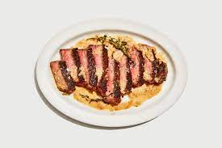

Steak with Pan Sauce

Steak
This is a delicious steak recipe that is versatile. If you aren't feeling steak, some other options you can include are pork chops and chicken thighs.
Ingredients
- 1 pounds steak
- Kosher salt
- Black pepper
- 1 tablespoon vegetable oil
- 1 small shallot
- 2 garlic cloves
- 1/4 cup cold unsalted butter
- 2 sprigs thyme
- 2 tablespoons Dijon mustard
- 2 teaspoons Worcestershire sauce
Steps
- Heat a medium dry skillet over medium. Season steak with lots of salt and pepper on both sides. Press salt and pepper into the meat.
- Pour 1 tablespoon oil into the skillet. Gently lay the steak in skillet and cook the underside until it is deeply browned and a crust has formed (~5 minutes).
- Flip your steak over and equally cook until medium rare (~5 minutes). Transfer steak onto a cutting board to rest
- Let skillet cool for about 5 minutes. Next, peel and finely chop 1 shallot. Smash 2 garlic cloves with the flat side of your knife. Cut 1/4 cup of butter into 4 tbsp-size pieces.
- Place skillet over medium-low heat and add shallot, garlic, 2 spris thyme, and 2 tbsp butter. Stir often with whisk and until shallot is golden brown (~2-3 minutes).
- Add 1/2 cup water to skillet and whisk to dissolve. Whisk in 2 tsbp mustard and 2 tsp Worcestershire sauce until smooth.
- Next move back to your cutting board and cut your steak against the grain.
- Spoon pan sauce over steak and serve!